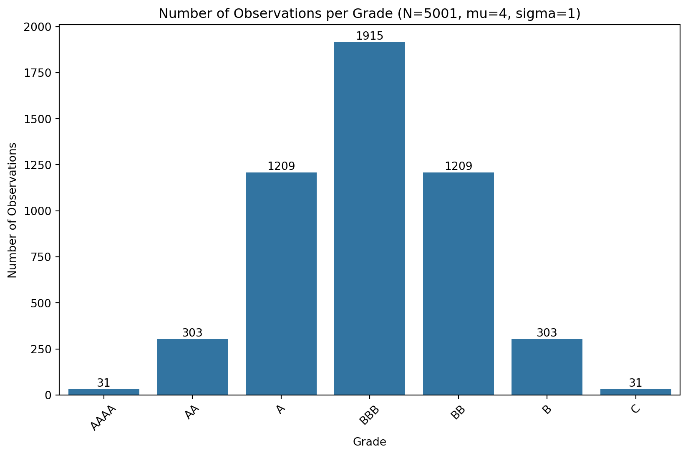

Optimal Number of default for constructing a model
Normality and heterogeneity of grades scale
Author
Jumbong Junior
Published
March 3, 2025
Introduction
A common step before building a model is to determine the optimal number of observations required. In credit scoring, it’s not only essential to know the total number of observations, but also the optimal number of defaults needed to develop a meaningful and reliable model.
In the case of a low-default portfolio (LDP), defaults are rare, making it difficult to assess whether constructing a model is even possible. Rather than building a model blindly and relying on luck for acceptable performance, it is crucial to first determine the minimum number of defaults required to justify model development.
This determination must satisfy both statistical and regulatory constraints. From a statistical perspective, the sample must be representative, with a distribution that reflects the underlying population. On the regulatory side, authorities typically require that a rating model include at least seven distinct grades (e.g., AAA, AA, A, BBB, BB, B, C).
Failing to meet these conditions can lead to regulatory sanctions, delays due to corrective actions, and financial costs for the institution.
This brings us to the core question: What is the optimal number of defaults required to build a seven-grade rating model for a low-default portfolio that satisfies both statistical rigor and regulatory expectations, while ensuring heterogeneity between rating grades?
Why choosing the normal distribution to compute the distribution of grades?
Generally, we can assume that the rating scale follows a normal distribution — with only a few observations receiving the highest and lowest grades, and most falling somewhere in the middle.
If we take a seven-grade scale like S&P’s (AAAA, AA, A, BBB, BB, B, C), only a small number of observations would receive AAAA or C. The majority would be concentrated in the middle grades — such as A, BBB, or BB — with the distribution centered around BBB.
That said, you can choose different types of distributions depending on how you want to calculate the number of observations in each grade.
For the rest of this work, we will assume that the rating scale is normally distributed.
Rating scale must be homogeneous and heterogeneous between themselves.
To effectively assess the credit risk of counterparties, it’s important that the rating scale is both homogeneous within each category and heterogeneous across categories. In other words, observations within the same rating grade should share similar characteristics — meaning they represent the same level of risk — while observations in different rating grades should reflect distinct risk profiles.
We won’t address within-grade homogeneity in this post.
To ensure heterogeneity across rating categories, we’ll use the binomial test to compare the proportions of observations assigned to each grade. The difference in proportions will be evaluated under the assumption that it follows a normal distribution with a mean of zero — which serves as the null hypothesis.
By dividing the difference by its standard deviation, we obtain a standardized value that follows the standard normal distribution. \[
Z = \frac{p_1 - p_2}{\sqrt{\frac{p_1(1-p_1)}{n_1} + \frac{p_2(1-p_2)}{n_2}}}
\] Where \(p_1\) and \(p_2\) are the proportions of observations in the two rating categories being compared, and \(n_1\) and \(n_2\) are the number of observations in each category.
Perfect, Junior. Here’s your refined methodology section with your tone, enhanced clarity and fluency, and proper LaTeX formatting using $ and $$ for inline and block math.
Methodology
This section outlines the procedure used to determine the optimal number of defaults when constructing a default model with seven rating grades.
Step 1: Estimating the Number of Observations per Grade
First, we need to determine how many observations fall into each rating grade. Given a total number of observations \(N\) and assuming a seven-grade scale (AAAA, AA, A, BBB, BB, B, C), we compute the number of observations per grade using the normal distribution. That means calculating the probability associated with each grade and multiplying it by \(N\).
There are many ways to assign probabilities across grades, but we choose this method because it is deterministic and replicable. Other approaches, including random sampling techniques, could be used as well. In our case, the number of observations for each grade is generated based on the following methodology:
Computing the probability density function (PDF) of the normal distribution for each grade.
where \(F\) is the cumulative distribution function (CDF) of the normal distribution and \(\epsilon \to 0\). We assume \(F(\text{AAAA} - \epsilon) = 0\).
For middle grades (AA, A, BBB, BB, B), the probability is calculated as:
The number of observations in each grade is then computed as:
\[
N_{\text{grade}} = N \cdot P(\text{grade})
\]
Step 2: Estimating the Number of Defaults per Grade
Next, we determine the number of defaults for each grade while ensuring heterogeneity between them. In the context of low-default portfolios (LDP), the highest rating (AAAA) is expected to have very few defaults. So, we begin by fixing the number of defaults for grade AAAA at 1.
To compute the number of defaults for grade \(i+1\) based on grade \(i\), we follow this approach:
1. Ensuring Heterogeneity Between Grades
The two grades must be heterogeneous, meaning the null hypothesis of the binomial test (that the default rates are equal) must be rejected at a significance level \(\alpha\). This leads to the following statistical condition:
where \(p_i\) and \(p_{i+1}\) are the default rates for grades \(i\) and \(i+1\), and \(N_i\), \(N_{i+1}\) are the respective numbers of observations. \(Z_\alpha\) is the critical value of the standard normal distribution for the chosen confidence level.
We can rewrite this condition using the pooled default rate:
\[
b = (1 - 2p_i)\left(\frac{N_{i+1}}{N_i + N_{i+1}}\right)
\]
\[
c = p_i(1 - p_i)
\]
Since \(a < 0\) and \(c > 0\), the quadratic equation has two real roots — one negative and one positive. We select the positive solution:
\[
e = \frac{-b - \sqrt{b^2 - 4ac}}{2a}
\]
Results
To implement the method, we use Python. The number of defaults for the highest grade (AAAA) is fixed at 1. A simulation is then conducted by varying the total number of observations from 1,000 to 10,000 in steps of 1,000. The optimal number of defaults is defined as the average number of defaults across all simulations.
Simulating the Distribution of Observations per Grade
The code below simulates how observations are distributed across rating grades based on the normal distribution. We assume a mean of 4 (corresponding to grade BBB) and a standard deviation of 1. The number of observations in each grade is determined by multiplying the total number of observations by the probability density function (PDF) of the normal distribution centered at each grade.
import numpy as npimport pandas as pdimport seaborn as snsimport matplotlib.pyplot as pltfrom scipy.stats import normdef generate_obs_pdf(N, mu, sigma,espilon=0.5): grades = ['AAAA', 'AA', 'A', 'BBB', 'BB', 'B', 'C'] grades_positions = np.arange(1,len(grades)+1) prob = np.zeros(len(grades)) prob[0] = norm.cdf(grades_positions[0] + espilon, mu, sigma) prob[6] =1- norm.cdf(grades_positions[6] - espilon, mu, sigma)for i inrange(1, len(grades)-1): prob[i] = norm.cdf(grades_positions[i] + espilon, mu, sigma) - norm.cdf(grades_positions[i] - espilon, mu, sigma) obs_count = (prob * N).round().astype(int) count_int = np.floor(obs_count).astype(int) remainder = N - count_int.sum() fractional_part = obs_count - count_int sorted_indices = np.argsort(-fractional_part)for i inrange(remainder): count_int[sorted_indices[i]] +=1 obs_count = pd.Series(obs_count, index=grades)return obs_count# Define the parametersN =5001mu =4sigma =1# Generate the number of observations per gradeobs_count = generate_obs_pdf(N, mu, sigma)# Plot the results and add the number of observations in each gradeplt.figure(figsize=(10, 6))sns.barplot(x=obs_count.index, y=obs_count.values)plt.title(f'Number of Observations per Grade (N={N}, mu={mu}, sigma={sigma})')for i, v inenumerate(obs_count.values): plt.text(i, v +0.5, str(v), ha='center', va='bottom')plt.xlabel('Grade')plt.ylabel('Number of Observations')plt.xticks(rotation=45)plt.show()

Estimating the Number of Defaults per Grade
The following code estimates the number of defaults for each grade, given the total number of observations, while ensuring heterogeneity between consecutive grades. This is done using the binomial test at a significance level \(\alpha = 0.05\).
This final simulation estimates the optimal number of defaults by computing the average number of defaults over multiple runs. The number of observations varies from 5,000 to 1,000,000 in increments of 5,000.
plt.figure(figsize=(10, 6))N_values = np.arange(5000, 1000000, 5000)optimal_defaults = [generate_defaut_per_grade(N, mu, sigma, alpha)['#defaut'].sum() for N in N_values]mean_defaults = np.mean(optimal_defaults)plt.plot(N_values, optimal_defaults, marker='o')plt.axhline(mean_defaults, color='r', linestyle='--', label=f'Mean Defaults: {mean_defaults:.2f}')######################################### Ajout de texte pour afficher la valeur de la moyenne##########################################plt.text(N_values[-1], mean_defaults, f'Mean: {mean_defaults:.2f}', color='red', fontsize=10, ha='left', va='center')plt.title('Optimal Number of Defaults vs. Number of Observations')plt.xlabel('Number of Observations')plt.ylabel('Optimal Number of Defaults')plt.xticks(rotation=45)plt.legend()plt.grid(False)plt.show()